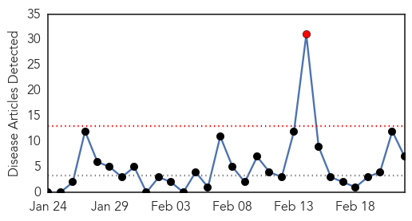
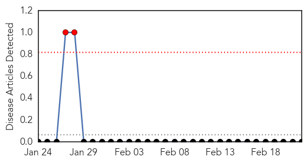

Measles
30-Day Web Trend
1 alerts, 0 warnings

30-Day Twitter Trend
0 alerts, 0 warnings

Article Locations

Article Confidences

Top Articles:
- 0.991
- Why Some Rich, Educated Parents Avoid Vaccines
- 0.990
- Why Some Rich, Educated Parents Avoid Vaccines
- 0.983
- Flu Deaths Down, Measles Cases Increase
- 0.976
- Public Health warns of Measles cases
- 0.736
- California officials report more measles cases statewide
- 0.652
- Nation imports scarce chicken pox vaccine
- 0.595
- Dozens wounded treated amid new wave of violence in Malakal
Top Tweets:
-
No tweets found for Feb 22, 2014
Bubonic Plague
30-Day Web Trend
2 alerts, 0 warnings

30-Day Twitter Trend
0 alerts, 0 warnings

Article Locations

Article Confidences

Top Articles:
-
No articles found for Feb 22, 2014
Top Tweets:
-
No tweets found for Feb 22, 2014